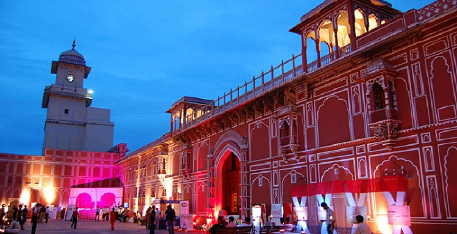
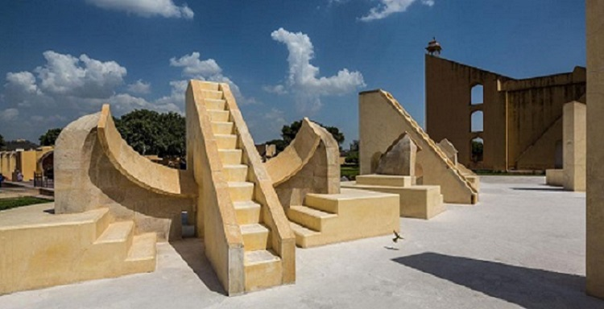
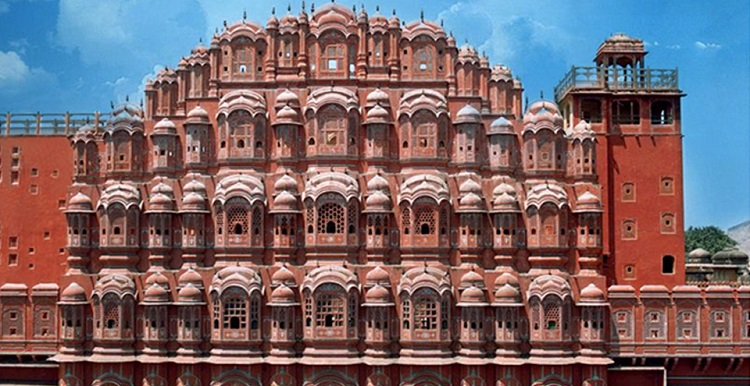
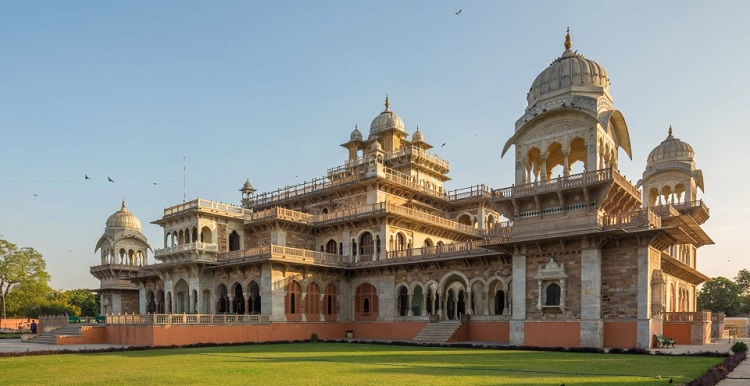

Planned by Vidyadhar Bhattacharya, Jaipur holds the distinction of being the first planned city of India.
Renowned globally for its coloured gems, the capital city of
Rajasthan combines the allure of its ancient history with
all the advantages of a metropolis.
The bustling modern city is one of the three corners of the golden
triangle that includes Delhi, Agra and Jaipur.
The story goes that in 1876, the Prince of Wales visited India on a tour. Since the colour pink was symbolic of
hospitality, Maharaja Ram Singh of Jaipur painted the
entire city pink. The pink that colours the city makes for a
marvellous spectacle to behold. Jaipur rises up majestically against the backdrop of the forts Nahargarh,
Jaigarh and
Garh Ganesh Temple.
Jaipur traces back its origins to 1727 when it was established by Jai Singh II, the Raja of Amber.
He shifted his capital from Amber to the new city because of the
rapidly-growing population and an increasing
water scarcity. Architect Vidyadhar Bhattacharya used the established principles of Vastu Shastra to build the city.
ATTRACTIONS & PLACES TO VISIT AND EXPLORE IN JAIPUR
|  CITY PALACE Located deep within the walled city, the City Palace Complex was conceived and built by Maharaja |
 JANTAR MANTAR Now a UNESCO World Heritage Site, Jantar Mantar in Jaipur is considered to be the largest of the five |
|  HAWA MAHAL Hawa Mahal, literally the Palace of Winds, was built in 1799 by the poet king Sawai Pratap Singh as a |
 ALBERT HALL MUSEUM (CENTRAL MUSEUM) The building gets its name from The Victoria and Albert Museum in London, the inspiration for its |
HOW TO REACH HERE
The Jaipur International Airport is called Sanganer Airport. There are domestic flight connections to and from Delhi, Kolkata,
Mumbai, Ahmedabad, Jodhpur, Udaipur and several other places. There are also international flights from Jaipur to Dubai, Muscat,
Singapore & Bangkok as well.
A convenient way to travel to Jaipur is by road. Regular service of AC and Deluxe buses is available from
all major cities in Rajasthan.
Jaipur is connected via rail from all major cities including Delhi, Agra, Mumbai, Chennai,
Kolkata, Bikaner, Jodhpur, Udaipur, Ahmedabad, Bangalore, etc.